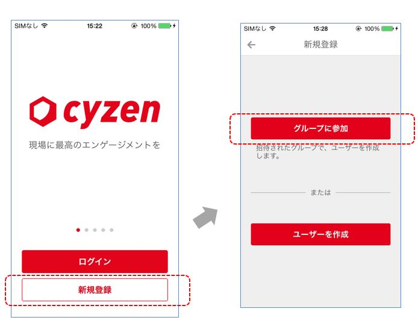

アプリの初期設定¶
新規にはじめる¶
はじめてご利用になる場合は、グループを新たに作成して、ユーザーを作成します。「初めての方はこちら」をタップして、 「新しくグループを作成」を選択てください。

お名前、パスワードを入力した後、「登録」ボタンを押してください。
登録後、cyzenのユーザーIDとグループIDが自動発行されます。忘れないよう保管をお願いします。
あなたはグループの管理者です。メンバーを招待して、それぞれの権限を変更することができます。
グループに参加する¶
グループ管理者からグループIDを受け取っている場合、「初めての方はこちら」をタップして、 「グループに参加」を選択します。
お名前、パスワードを入力した後、「登録」ボタンを押してください。
登録後、cyzenのユーザーIDが発行されます。忘れないよう保管をお願いします。